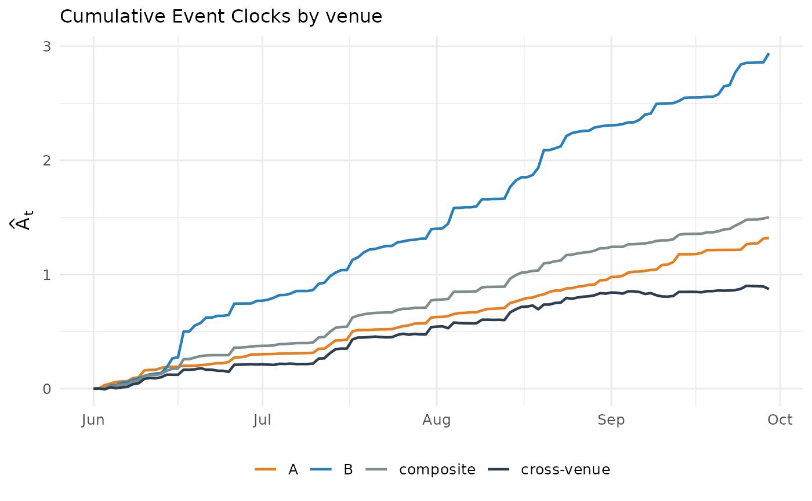

The running versions of the four clocks of event_clock_venues() —
each venue's own clock, the composite clock, and the cross-venue clock
— for plotting how much common news versus venue noise accumulated
over time.
Usage
event_clock_venues_path(
x,
y,
from = NULL,
to = NULL,
labels = NULL,
clip = NULL
)
# S3 method for class 'event_clock_venues_path'
plot(x, ...)Arguments
- x, y
event_pricesobjects (or coercible) for the same event outcome on two venues.- from
Valuation date/time (default: first observation).
- to
One or more horizon dates/times (default: last observation = full sample). Names are used as horizon labels.
- labels
Optional venue labels (default: the
market_ids).- clip
Numeric length-2 clipping bounds for
qbefore the log-odds transform; defaults to the bounds stored inx.- ...
Unused (for the
plotmethod).
Value
A tibble of class event_clock_venues_path with columns
time, q_x, q_y, A_x, A_y, A_composite, A_cross; venue
labels are stored in the labels attribute.
Examples
set.seed(7)
p <- ec_simulate_path(1, 120, q = 0.5, A = 1)
days <- as.Date("2024-06-01") + 0:120
noisy <- function(sd) data.frame(time = days,
q = ec_ilogit(p$L + stats::rnorm(121, sd = sd)))
path <- event_clock_venues_path(noisy(0.05), noisy(0.10),
labels = c("A", "B"))
plot(path)
